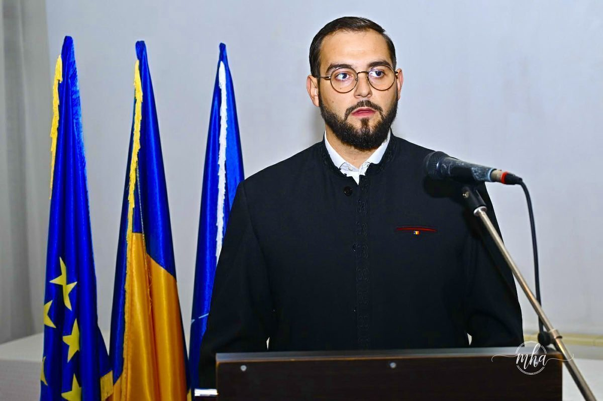

Fundația Gheorghe Țițeica anunță oficial deschiderea perioadei de înscrieri pentru anul școlar 2026–2027 în cadrul unităților de învățământ aflate sub patronajul său din municipiul Drobeta-Turnu Severin. Oferta educațională este construită pentru a răspunde cerințelor actuale ale societății, oferind elevilor și absolvenților oportunități reale de dezvoltare academică și profesională, într-un mediu modern, sigur și orientat spre performanță.
Fondată în spiritul valorilor promovate de marele matematician român Gheorghe Țițeica, fundația și-a asumat de-a lungul timpului un rol central în peisajul educațional al județului Mehedinți, susținând nu doar infrastructura școlară, ci și formarea unor cadre didactice dedicate și a unor generații de absolvenți bine pregătiți pentru piața muncii.
Oferta pentru 2026–2027 vine cu locuri disponibile în specializări variate — de la profiluri teoretice și economice, până la sportiv și medical — acoperind o paletă largă de interese și aptitudini ale tinerilor din Drobeta-Turnu Severin și din întregul județ.
Liceul Teoretic „Șerban Cioculescu"
Una dintre cele mai importante unități coordonate de fundație, Liceul Teoretic „Șerban Cioculescu", vine în întâmpinarea viitorilor elevi cu o ofertă variată și bine structurată, adaptată atât nevoilor academice, cât și celor profesionale și sportive. Instituția se remarcă prin calitatea actului educațional, prin corpul profesoral dedicat și prin rezultatele obținute de absolvenți în carierele lor.
📚 Locuri disponibile — Liceul Teoretic „Șerban Cioculescu"
- Clasa a V-a 26 locuri
- Clasa a IX-a — tehnician în activități economice/finanțe/contabilitate 28 locuri
- Clasa a IX-a — profil sportiv (fotbal) 48 locuri
- Cursuri cu frecvență redusă — matematică-informatică 28 locuri
Profilul sportiv cu specializare în fotbal reprezintă o oportunitate unică în județ pentru tinerii pasionați de sport, combinând pregătirea academică cu antrenamentul profesionist. Cursurile cu frecvență redusă la matematică-informatică se adresează celor care doresc să îmbine studiile cu activitatea profesională.
Școala Postliceală Sanitară „Gheorghe Țițeica"
Școala Postliceală Sanitară „Gheorghe Țițeica" continuă să fie una dintre cele mai căutate instituții de profil medical din regiune, oferind pentru 2026–2027 locuri în trei specializări esențiale în sistemul de sănătate românesc.
🩺 Locuri disponibile — Școala Postliceală Sanitară „Gheorghe Țițeica"
- Asistent medical generalist 160 locuri
- Asistent medical de farmacie 64 locuri
- Asistent medical balneofiziokinetoterapie și recuperare 32 locuri
Cu un total de 256 de locuri disponibile în specializările medicale, Școala Postliceală Sanitară răspunde cererii tot mai mari de cadre medicale calificate la nivel regional și național. Absolvenții au acces rapid pe piața muncii în sistemul public și privat de sănătate.
Educația — o investiție în viitor

„Educația reprezintă fundamentul unei societăți solide și moderne. Într-un context în care schimbările sunt rapide și provocările tot mai complexe, rolul școlii devine esențial nu doar în transmiterea de cunoștințe, ci mai ales în formarea caracterelor și a competențelor necesare vieții.
Instituțiile aflate sub patronajul fundației noastre oferă oportunități reale pentru fiecare elev, indiferent de traseul pe care îl alege – fie că vorbim despre învățământ teoretic, economic, sportiv sau medical. Diversitatea specializărilor permite adaptarea educației la aptitudinile și aspirațiile fiecărui tânăr.
Cred cu tărie că investiția în educație este cea mai sigură investiție pe termen lung. Prin profesionalismul cadrelor didactice și prin condițiile oferite, aceste școli contribuie activ la formarea unor generații pregătite pentru viitor și pentru integrarea pe piața muncii.
Îi încurajăm pe toți cei interesați să aleagă cu încredere aceste instituții și să devină parte a unei comunități educaționale orientate spre performanță și dezvoltare personală."
— Prof. Drd. Marian Gherghinescu, consilier al Fundației „Gheorghe Țițeica"
Prin această ofertă educațională diversificată, Fundația Gheorghe Țițeica își reafirmă misiunea de a susține educația de calitate și formarea noilor generații de profesioniști, contribuind la dezvoltarea comunității din Drobeta-Turnu Severin și din întregul județ Mehedinți.
📋 Informații înscrieri — 2026–2027
📍 Adresă: Str. Traian, nr. 84, Drobeta-Turnu Severin
🕗 Program: Zilnic, între orele 08:00 – 15:00
📧 Email: fundatiagheorgetiteica@yahoo.com
📠 Telefon/Fax: 0252 214 164
📱 Contact: 0747 077 551 | 0746 415 988 | 0723 285 096